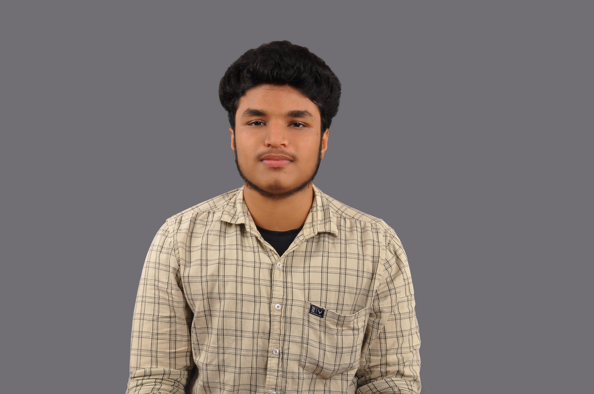

Gijith S

Summary
I am a diligent and self-motivated individual with a strong foundation in computer applications. I hold a BCom degree in Computer Application from Calicut University, where I gained valuable knowledge in various aspects of technology. Currently, I am passionately pursuing self-study in web development to expand my skill set and stay at the forefront of the dynamic digital landscape.
Education
Bcom degree in computer application from Calicut University
Skills
- Web Development: Proficient in HTML, CSS, and JavaScript, with a focus on building dynamic and user-friendly websites.
- Problem-solving: Strong analytical and critical thinking skills to identify and resolve coding challenges and troubleshoot technical issues.
- Self-Learning: Proven ability to independently acquire new knowledge and skills through online resources, tutorials, and practical projects.
- Adaptability: Quick learner who can adapt to evolving technologies and frameworks in the fast-paced field of web development.
- Communication: Strong verbal and written communication skills to effectively convey ideas and concepts to both technical and non-technical stakeholders.
contact me